|
The performance of the whole Quicksort algorithm depends on how well
selectpivot does at picking a good pivot point. The worst case
for the given selectpivot procedure is when the data is already
sorted. The higher of the first two elements in a data partition will
simply divide the range into an one-element left side and an (x-1)element right side. This causes the Quicksort to run in quadratic
time, n2 to be precise.
Another limitation of the Quicksort is that it tends to be an
excellent choice for large arrays but performs badly with very small
ones.
The best and average case running efficiency of a Quicksort is
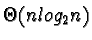.
In order to Quicksort one element takes no comparisons. That is:
T(1) = 0
Now, in order to Quicksort n elements we have to select a pivot
point, partition the n elements, and recurse on the two partitions.
Assume the i element is chosen to be the pivot point (where 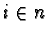). In order to partition the n elements will take, at most,
(n-1) comparisons at which point the quicksort will recurse on both
of the two partitions. One partition will consist of the first i-1elements and the other will be the contain n-i elements (assuming
the pivot value itself goes with the right partition). Thus, to sort
n items we need, at most, (n-1) comparisons in the partitioning
phase plus however long it takes to sort each resulting partition:
T(n) = (n-1) + T(i-1) + T(n-i)
However, the above recurrence relation cannot be simplified in the
stated form; to continue more information about the selection of a
pivot point is needed. Assume that any value of the n range is
equally likely to become the pivot value. The above expression can be
rewritten in the form below. Note that the terms T(i-1) and
T(n-i) have been summed for all n possible values of i and then
divided by n:
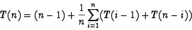
The summation in the above expression can be distributed to both
T(x) terms giving:
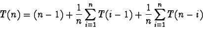
Or...
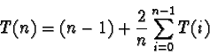
This is a full-history recurrence relation and is solved by
subtracting T(n) from T(n+1). First, calculate T(n+1) by
substituting an (n+1) for every n in the above equation:
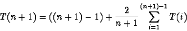
These summations cannot be subtracted because of each ones the leading
fraction. To proceed, multiply each formula by the denominator of
its fraction and get:
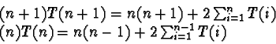
Now subtract the latter from the former:
(n+1)T(n+1) - (n)T(n) = (n+1)n - n(n-1) + 2T(n) = 2n + 2T(n)
This implies that:
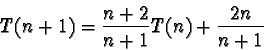
This relation is still tricky to solve. To proceed substitute a value
of 2 for the fraction
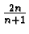
- a pretty close
approximation. Also reverse the terms being added.
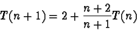
So expanding this relation:
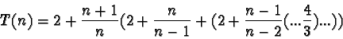
That is:
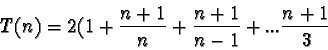
Or:
T(n) = 2(n+1) (H(n+1)-1.5)
Where H above is the harmonic series
(1+1/2+1/3+1/4...+1/n). The
harmonic series of n can be approximated as:
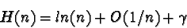
Where
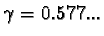
is Euler's constant. The approximate
solution to the average case complexity of the Quicksort is:
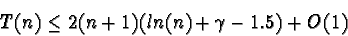
This is an
O(n log2 n) solution.
|